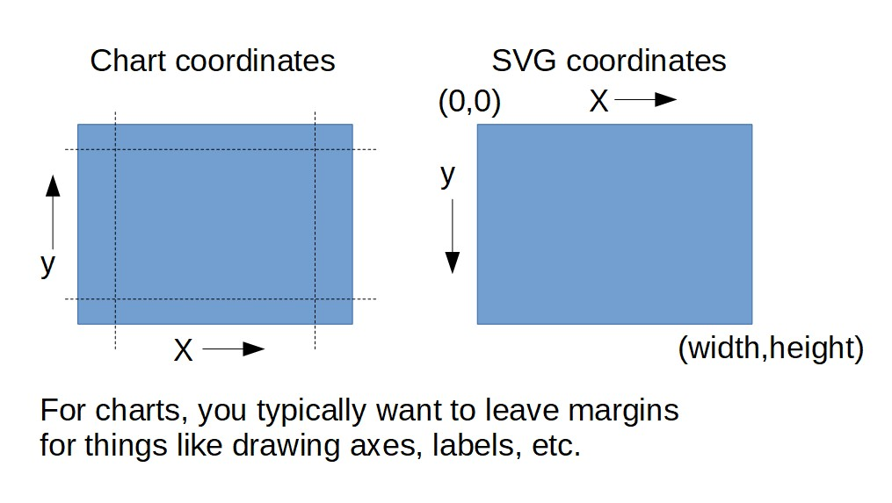

6b: Intro to D3
Objectives
- Discuss libraries beyond D3.
- Go through selection and data binding. Also: axes, domains and ranges.
- Put together a simple bar / scatterplot chart.
Why D3?
(Data Driven Documents)
It is a comprehensive framework for building any sort (almost literally) of interactive visualizations for the web.
It is however, not a simple high-level graphing template library.
One of the main design patterns in this library is binding the data to DOM elements.
Reading: D3 is not a Data Visualization Library, Elijah Meeks
How to learn D3
How to learn D3.js, Amelia Watterberger
D3 Graph Gallery, Yan Holtz
Sample libraries built on top of D3
Other charting libraries
Animation and 3D libraries
Animation
3D
Utility Libraries
D3 installation / data binding
I'll be including D3 the easiest way - embedding as a script pulled from a CDN. You can of course use npm / import and design a more modern way of scaffolding your projects.
One thing to note is that for reactivity, we'll be using D3's default data binding functions.
If you use a JS framework / compiler — Vue, React, Angular, Svelte, etc. — it is a good idea that your data binding does not clash with D3's one.
D3 code workshop
Hello World
Let's start with a simple template. We'll go through selections, which is a core component of D3.
<!DOCTYPE html>
<html>
<head>
<meta charset="UTF-8">
</head>
<body>
<script src="https://d3js.org/d3.v7.min.js"></script>
<script>
d3.select("body").append("p").text("Hello World!");
</script>
</body>
</html>
Note: We're appending a paragraph tag of "Hello World" to the body.
Hello Worlds
<div id="hellos">
<p>Hello World!</p>
<p>Hello World 2!</p>
<p>Hello World 3!</p>
</div>
<script>
d3.select("#hellos p").style("color", "green");
d3.selectAll("#hellos p").style("color", "green");
</script>
Notice the difference between the select and selectAll statements.
It's similar to JQuery (or other modern frameworks) in that you can manipulate any DOM element. Try d3.select("body").style("background-color", "red")
Data Binding
let data = [10, 20, 30];
let hellos = d3.select("#hellos");
hellos.selectAll("p")
.data(data)
.enter()
.append("p")
.text("Hello World");
Notice the design pattern: Select a bunch of elements (that don't exist), bind that to the data, and then append said elements.
One style to write javascript is to use method chaining, which is a design pattern you will see in many javascript libraries, like JQuery or Lodash. D3 also follows this style, and it makes your code more readable.
Slightly more complex example
let data = [
{text: "Hello World 1", size: 10},
{text: "Hello World 2", size: 20}
]
let hellos = d3.select("#hellos");
hellos.selectAll("p")
.data(data)
.enter()
.append("p")
.style("font-size", d => d.size + "px")
.text(d => d.text)
Notice the use of arrow notation (ES6) to write anonymous functions.
Exercise 1
let data = [
{text: "Hello World 1", size: 10, color: "green", font: "Courier New"},
{text: "Hello World 2", size: 20, color: "blue", font: "Arial"},
{text: "Hello World 3", size: 30, color: "red", font: "Times New Roman"}
];
Given this dataset, can you print out each individual text, and style the elements?
Fun with transitions
hellos.selectAll("p")
.data(data)
.enter()
.append("p")
.text(d => d.text)
.transition()
.duration((d,i) => i * 1000)
.style("font-size", d => d.size + "px")
.style("color", d => d.color);
Recap: SVG
Exercise 1b
Remember how to draw shapes using SVGs?
<svg width="1000" height="1000"></svg>
let data = [
{cx: 400, cy: 600, r:150, fill: "green", stroke: "black"},
{cx: 100, cy: 200, r:50, fill: "blue", stroke: "purple"},
{cx: 650, cy: 100, r:100, fill: "red", stroke: "orange"}
]
Given this dataset, can you add these as circles to the svg, with the appropriate theming?
Exercise 1b hints
d3.select("svg").selectAll("circle")
.data(data)
.enter()
.append("circle")
.attr("cx", d => d.cx)
...
Fill in the rest.
Set stroke-width to be 5 so the stroke is more visible.
Coordinate systems: Chart to SVG
Domains and ranges
Let's say we want to draw our 1000 x 1000 chart data size onto an SVG that is 600 x 600
How do we map our quantitative data scale to the SVG drawing scale? Use domain / range to automatically calculate the mapping.
let xScale = d3.scaleLinear()
.domain([0,1000])
.range([0,600]);
let yScale = d3.scaleLinear()
.domain([0,1000])
.range([600,0]);
More on scales and domain/range here.
Note that the my yScale is inverted here. Because for standard charts, we draw from the bottom-left up rather than top-left down.
Setup Dimensions / Margins
let margin = {top: 20, right: 20, bottom: 40, left: 40},
width = 600 - margin.left - margin.right,
height = 600 - margin.top - margin.bottom;
let chart = d3.select("svg")
.attr("width", 600)
.attr("height", 600)
.append("g")
.attr("transform", "translate(" + margin.left + "," + margin.top + ")");
let xScale = d3.scaleLinear()
.domain([0,1000])
.range([0,width]);
let yScale = d3.scaleLinear()
.domain([0,1000])
.range([height,0]);
chart.selectAll("circle")
.data(data)
.enter()
.append("circle")
.attr("cx", d => xScale(d.cx))
.attr("cy", d => yScale(d.cy))
.attr("r", d => d.r)
.attr("fill", d => d.fill);
Add axes
chart
.append("g")
.call(d3.axisBottom(xScale));
chart
.append("g")
.call(d3.axisLeft(yScale));
Axes are added to origin point (0,0). Use a transform to translate the xAxis to the bottom of the chart.
chart
.append("g")
.attr("transform", "translate(0," + height + ")")
.call(d3.axisBottom(xScale));
Add labels
chart
.append("text")
.attr("transform", "translate(" + (width / 2) + "," + (height + 40) + ")")
.text("X-axis label")
.attr("text-align", "middle");
chart
.append("text")
.attr("transform", "translate(-40, " + (height / 2) + ") rotate(-90)")
.text("Y-axis label")
.attr("text-align", "middle");
Add colorscale
Let's map radius to a sequential colorscale.
let colorScale = d3.scaleLinear()
.domain([0, 300])
.range([0,1]);
...
.attr("fill", d => d3.interpolateViridis(colorScale(d.r)));
Event firing
Mouseover / mouseout
...
.on("mouseover", (event, d) => {
d3.select(event.currentTarget)
.attr("stroke", "black")
.attr("stroke-width", 2);
})
.on("mouseout", (event, d) => {
d3.select(event.currentTarget)
.attr("stroke", "none");
})
Do note that this event firing is syntax for the latest D3 v7. Migration docs here. Syntax for event firing is different for previous versions.
Clean-up / Ideas
Things to consider
- Group, order, and label things for you to understand if you need to inspect the SVG
- Consider moving your theming to CSS as this is easier to change.
- Consider adding legends, labels, etc.
- Consider adding interactivity for tooltips and feedback.
- You can make the SVG form factor responsive if needed.
- Transitions for the bling.
Basic D3 bar chart

D3 bar chart 2
Transitions. Enter, update and exit design pattern

Final thoughts
D3 is probably a little overkill for standard charts, and there are tons of higher-order, easier to use libraries out there.
Please note that you can use any charting library to create the charts required for the project and assignments, and D3 is not specifically required.
However, D3 gives you a ton of high-quality design patterns for interaction, data hierarchies and chart types.
From unusual chart types / interaction to code art pieces, D3 is useful. Here are some samples.
Questions?
Chi-Loong | V/R